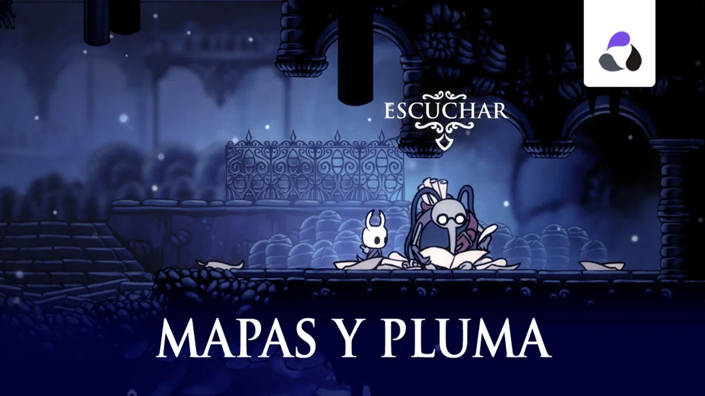

El jugador se encuentra por primera vez a Cornifer en el fondo de Cruces Olvidados, ahí le vende un mapa y le recomienda visitar la tienda de su esposa Iselda en Bocasucia. Cornifer se encuentra en todas las zonas donde es posible conseguir un mapa. Los papeles en el suelo y su tarareo revelan su posición. Una vez que el jugador haya conseguido todos los mapas o derrotado a los 3 Soñadores, aparecerá en su tienda durmiendo.
